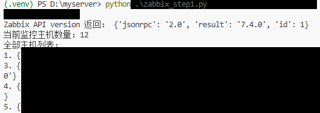

API 验证阶段
Zabbix API 取数打通
目标
验证 Zabbix API 可用性，确认接口认证方式正确，并成功获取主机列表，为后续固定筛选关键设备建立基础。
1. 脚本入口
本阶段使用 zabbix_step1.py 作为最小可用验证脚本。它先调用 apiinfo.version 验证接口可达，再通过 host.get 拉取主机列表。
2. 认证方式
项目采用 Zabbix 7.x 推荐的接口凭证认证方式，把凭证放到请求头中，而不是在页面中展示任何真实认证值。
python .\zabbix_step1.py3. 关键验证点
这一步主要验证三个问题：接口是否通、认证是否可用、主机数据是否能正常返回。只有这三项都成立，后面的 AI 分析才有实际数据可用。
接口验证截图中包含主机名称和主机标识，公开页面使用脱敏截图保留验证过程说明。

4. 阶段成果
在这个阶段，已经可以看到当前纳管主机数量以及示例ID等基础信息。后续将 4 类关键对象泛化为核心网络设备、出口网络设备、NAS设备和业务服务器，公开页面不展示真实设备名、真实主机标识或内部地址。
本阶段成果
Zabbix API 认证方式验证完成，主机列表和基础监控对象已可稳定获取，为后续 AI 分析提供真实数据来源。